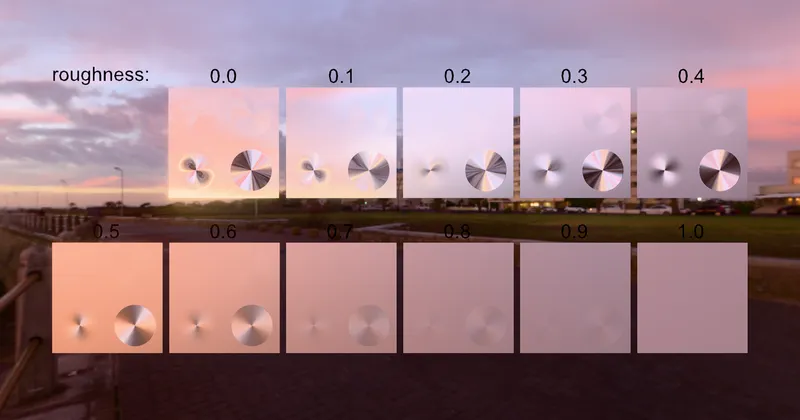

GLTF GLTF Extensions KHR_materials_anisotropy
Anisotropy Disc Test - RedGPU WebGPU Example
Tests anisotropic highlight rotation on a disc shape.
원판 형태의 비등방성 하이라이트 회전을 테스트합니다.

GLTF GLTF Extensions KHR_materials_anisotropy
Tests anisotropic highlight rotation on a disc shape.
원판 형태의 비등방성 하이라이트 회전을 테스트합니다.
